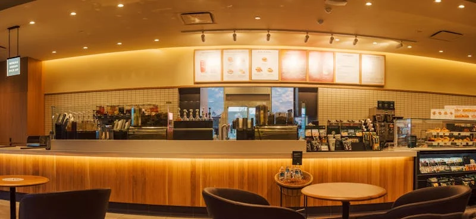

Open Mic Night
Every Wednesday evening we host an open mic night for local musicians, poets, and storytellers. Come perform or just come to listen.
Every Wednesday · 7pm
Coffee, Community & Connection
Table of Friends started with a simple idea: coffee brings people together. It's a reason to sit, to talk, to connect.
Located in creative Woodstock at the Old Castle Brewery, we've built a space where locals, artists, workers, and visitors come together. Every cup, every sandwich, every pastry is made with care.
Our mission: To create a welcoming space where good food, quality coffee, and genuine connection come together.
Whether you're starting your day or taking a break, our table is your table.

From our beans to our ingredients, we don't compromise on what goes into every cup and dish.
We believe tables are for sharing. Every conversation and connection that starts here matters to us.
We're not trying to be anything we're not. We're a neighbourhood coffee shop that cares about the people who walk through our door.
From regulars to first-timers we treat everyone like a friend. Good service is remembering your name and your order.
We love welcoming the community through our doors. Here are some of the events and activities that make our space special.
Every Wednesday evening we host an open mic night for local musicians, poets, and storytellers. Come perform or just come to listen.
Every Wednesday · 7pm
Join us every second Thursday of the month for our community book club. We read everything from local literature to international fiction.
2nd Thursday each month · 10am
We host a monthly community breakfast bringing together local organisations, volunteers, and anyone who wants to make a difference.
First Friday each month · 9am
We love community events. Whether it's a small workshop, a pop-up, or a gathering — get in touch and let's discuss.